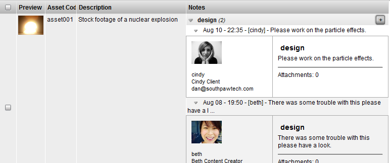

Notes are the ideal communication tool to use to store the message thread that occurs between content creators, supervisors, clients, etc.
TACTIC Notes are used to add and track comments on an item. A history of the previous notes are tracked with the item and can be viewed in the notes history. Each note contains the process for the item, the timestamp, who added the note and any file attachments. Optionally, each note can also be sent as an email and can be automated with rules to send to the correct user groups. Notes can be associated to a pipleine process with Tasks and Check-ins (Snapshots). Using this association, the communication of the progress of each individual can be accurately tracked and retrieved by a supervisor at any time for a production to the smallest detail.

First, load a view of items you wish to track notes for.
If the Notes column is not already in the view, it can be added through the column manager.
Note
In TACTIC 3.7+, the notes column can also be added to your view in the gear menu under Notes → Add Notes Column
Click the [+] on in the notes column on the item you wish to add a note to.

- In the add dialog, first select the process. If no tasks are assigned the process will be "default" otherwise, the task processes will be available in the list
- Add the note then click submit.
Note
If notifications are setup, an email will also be sent for the note. If you would like to setup automated emails Please review the Notifications section in the TACTIC Setup documentation.